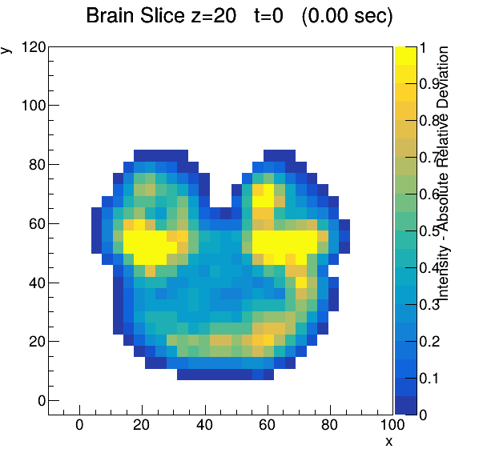
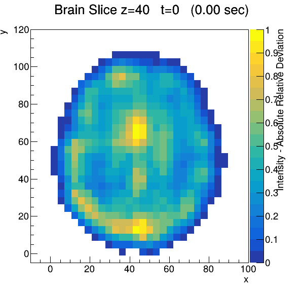
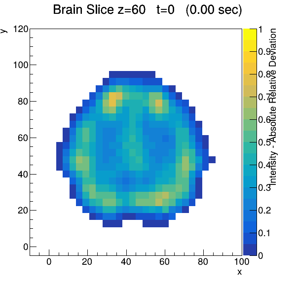
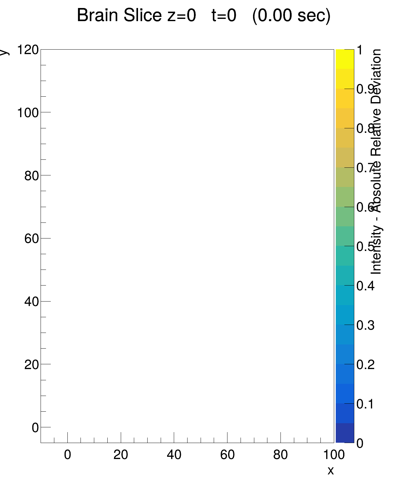
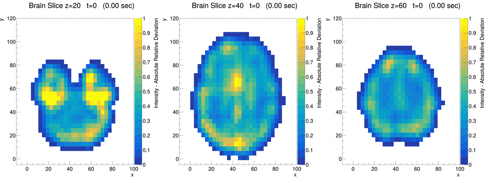

|
In this project I visualize fMRI data representing brain activity in the Default Mode Network (DMN). The report consist of two main visualizations: one with constant time and varying spatial coordinates, and another with constant spatial coordinates and varying time. About the data and the preprocessing steps The raw data was stored in a NIfTI (.nii) file, with dimensions x, y, z, and t, forming voxels containing activity levels over time. The voxels have volume of 2 mm$^2$ and there are 0.72 seconds between each scan. Using the Python package NiBabel, the data was be sampled and converted to a text file (CSV). Including every datap point would result in a the text file on ~GB magnitude, which would be excessive for this project. Sampling was therefore performed to reduce computational time and processing requirements while still retaining sufficient data quality for visualization purposes. Every other data point in x, y, and z axis was included, and the time axis was reduced to the first 42 time stamps, resulting in about 30 seconds of scans. The text file was next converted into a ROOT file by using the TTree structure, which was beneficial for plotting in ROOT. Histograms at constant time This section presents two-dimensional histograms of brain slices generated in ROOT, where color represents activity level. x, y, and t coordinates remains constant, while z cordinate increases for each new plot. This creates the effect of scrolling through the brain volume, similar to the visualization used in CT imaging.    The images shows brain cross sections at z = 20, 40 and 60 at time t=0. The colorbar indicates the absolute relative deviation from the mean activity level in the brain. Yellow zones are therefore either a much more active or much less active than the average voxel intensity. This is calculated using the following formula: $$ \bar{I} = |\frac{ I - \text{Global mean}} {\text{Global mean}} | \cdot 100 $$ To counteract sparse voxel density and create smoother plots, the intensity is averaged for nearby slices and ROOT's build in smooting function is utilized. In the images above, some areas are lit up more than the surrounding tissue. For future projects, it would be intersting to explore wether these areas match the regions one expect being active for this resting state network. Scrolling through all brain slices at t=0:  Time evolution of brain slices z=20, 40, 60:  More Latex examples Coding the polynomial $f(x)$ into the TF1 and similar objects in ROOT $$ f(x) = p_0 + p_1 x + p_2 e^ {-p_3 ( x - p_4) ^2 } $$ |
root_to_webN.C